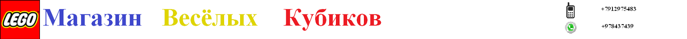

Кратенько о Lego
LEGO (ле́го, от дат. Leg-godt — «играй хорошо») — серии конструктора, представляющие собой наборы деталей для сборки и моделирования разнообразных предметов. Наборы LEGO выпускает группа компаний LEGO Group, главный офис который находится в Дании. Компания была основана в 1932 году. Её название выглядит и звучит как лат. и итал. lego — «собираю», хотя первоначально она выпускала обычные деревянные игрушки.
Компания LEGO Group была основана в 1932 году. Её основателем стал датчанин Оле Кирк Кристиансен), являвшийся в то время бригадиром команды плотников и столяров. Задача, которая стояла перед работниками компании (поначалу она состояла всего из 7 человек), — создать игрушки, развивающие воображение, изобретательность и творческие способности ребёнка. В 1947 году компания расширила производство и начала выпуск пластиковых игрушек. Начиная с момента своего появления в 1949 году, элементы LEGO во всех своих вариантах остаются совместимы друг с другом. Так, элементы, созданные в 1958 году, по-прежнему соединяются с элементами, выпущенными сейчас, несмотря на радикальные изменения в дизайне и форме элементов за эти годы.